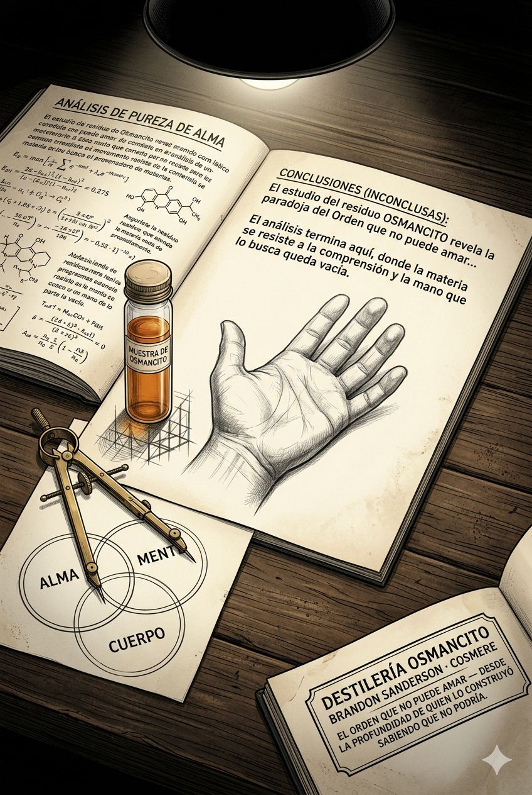

Registro de Entrada

Una catedral de engranajes vista desde dentro — los mecanismos perfectos, cada pieza en su lugar, cada rueda dentada encajando con matemática exactitud. La nave central vacía de fieles. La luz entra en ángulos calculados. Todo funciona. Nadie habita el milagro. Piedra gris azulada, metal bruñido, luz blanca y fría de mediodía. Una sola grieta en el muro del fondo, por donde entra una luz que no es blanca.
Módulo Alambique — Destilación
Materia prima en el alambique. Comenzando destilación.
Destilando barrica por barrica…
Componiendo el destilado maestro…
Eligiendo la bebida para la nota de cata…
Destilado Maestro
Hay una voz que recorre todos estos libros. No es la de ningún personaje. Es la del arquitecto detrás de la pared, que dibuja el plano antes de que nadie ponga el primer ladrillo, y que ya sabe —mientras dibuja— cuál será la última habitación en derrumbarse.
El Cosmere es, en su núcleo, un argumento sobre el orden. Sobre qué ocurre cuando el caos tiene nombre y el nombre tiene leyes y las leyes tienen consecuencias que no distinguen entre inocentes y culpables. Los dioses aquí no son misterio: son física. El poder no es gracia: es energía que alguien tiene que sostener. La magia no es milagro: es deuda. Cada sistema —Allomancy, Stormlight, BioChroma, AonDor— funciona con la precisión de un motor, y esa precisión es a la vez el mayor logro del corpus y su herida más visible.
Porque dentro de ese motor perfecto viven personas que no son perfectas, y el texto los ama de una manera que no puede evitar ser también una forma de administrarlos. Kaladin deprime durante cuatrocientas páginas con una fidelidad clínica que nadie esperaba de fantasía épica. Vin duda de todo excepto de Elend hasta que el sistema decide que la duda ya no es necesaria. Dalinar recuerda lo que hizo y decide que el recuerdo es suficiente penitencia si se convierte en construcción. Los personajes avanzan, siempre avanzan, hacia el momento en que el sistema les exige algo que solo ellos pueden dar.
El sacrificio aquí no es accidente. Es arquitectura. El texto construye la carga exacta que cada héroe puede soportar, y luego añade un poco más, con la precisión de un ingeniero que sabe cuánto aguanta una viga antes de que ceda.
Lo que sobrevive, al final —lo que queda después de los sistemas, los reveals, los cosmere-threads y los easter eggs para lectores de largo aliento— es algo más simple y más difícil de nombrar. Es el momento en que Kaladin está en el precipicio y decide bajar. El momento en que Sazed, con las cenizas de todas las religiones del mundo en los dedos, elige. El momento en que un personaje que nunca debió importar importa de una manera que ningún sistema anticipó.
Esos momentos no los construyó el arquitecto. Los habitó el escritor. Y en ese espacio —entre el plano y la pared, entre la regla y la grieta en la regla— es donde el Cosmere respira.
Barricas
Cartografía
Las barricas de mayor concentración son El Imperio Final, El Camino de los Reyes y El Héroe de las Eras. Son los libros donde el sistema y el personaje colisionan con mayor violencia y el texto no puede evitar producir algo memorable. Los libros intermedios de cada serie —El Pozo de la Ascensión, Palabras de Luz— tienen alta densidad informacional pero menor densidad de fracción noble: construyen en lugar de revelar. El Ritmo de la Guerra es el caso más complejo: denso en experiencia emocional, más escaso en frases que sobreviven solas.
El héroe que no quería serlo, la revelación diferida que recontextualiza lo anterior, el sistema mágico como metáfora de otro sistema (político, económico, psicológico), el sacrificio anunciado que el texto construye con ingeniería, el personaje secundario que porta la pregunta más difícil del libro, el dios como principio físico en lugar de misterio.
El sistema perfecto versus la persona imperfecta que lo habita: el texto los pone en contacto pero no resuelve si el sistema puede producir bondad o solo simularla. El trauma como profundidad versus el trauma como recurso narrativo: el corpus camina sobre esa línea con desigual fortuna. La arquitectura narrativa versus la habitabilidad emocional: Sanderson construye mejor de lo que habita.
Kaladin concentra el protagonismo narrativo más consistente del corpus. Sazed tiene el arco más completo. Dalinar tiene la pregunta más cara. Hoid tiene la presencia más elusiva y la que más promete para el futuro del Cosmere. Lightsong tiene el sacrificio más elegante. Las mujeres del corpus —Vin, Shallan, Navani, Vivenna— tienen arcos sólidos pero con frecuencia sus revelaciones más profundas ocurren en reacción a los hombres que las rodean.
El argumento central del Cosmere —la guerra entre fuerzas que exigen sacrificios humanos mientras los humanos tratan de construir algo durable— no se resuelve. Se complica. Cada libro añade una capa de complejidad cosmológica que amplía el tablero sin reducir la apuesta. La inagotabilidad del corpus depende exactamente de que ese argumento permanezca abierto.
Nota de Cata

Una copa de barro sobre una mesa de piedra en un altiplano sin horizonte visible — el mezcal dentro color ámbar oscuro, casi negro en los bordes, luminoso en el centro. La copa proyecta una sombra que tiene forma de andamio arquitectónico. Vapor que sube en espiral y forma, brevemente, la silueta de alguien que carga algo. La etiqueta de la botella al fondo, parcialmente legible: "termina en pregunta, no en respuesta."
Módulo Control de Calidad — Inspección
Nave recibida. Iniciando inspección.
Inspeccionando casco y quilla…
Sondeando aguas profundas…
Examinando al capitán y su sombra…
Emitiendo veredicto de zarpe…
Clasificación de Nave
Los Seis Estratos de Inspección
La tesis central del corpus es implícita pero consistente: el orden no garantiza la justicia, pero el caos no la produce tampoco; entre esos dos imposibles, los seres humanos tienen que construir algo durable con materiales imperfectos. El casco aguanta ese peso. La quilla —la estructura argumental que mantiene el rumbo— es sólida en los libros individuales y más problemática en la arquitectura intercósmica, donde las promesas son más grandes que los libros que las sostienen hasta ahora.
La tesis funciona mientras el corpus trata sobre el costo del poder. Empieza a ceder cuando el corpus trata sobre la mecánica del poder como entretenimiento. El galeón tiene, en algunas bodegas, lastre donde debería haber carga.
Sanderson escribe bajo dos corrientes simultáneas que el texto no siempre reconoce. La primera: la tradición del Mormon storytelling —narrativas de sacrificio, redención colectiva, figuras de pacto que avanzan hacia destinos que existían antes de que eligieran— que da al corpus su forma más profunda. La segunda: la economía del fandom, que exige expansión, interconnected universe, easter eggs, teorías y comunidad activa. Estas dos corrientes no siempre van en la misma dirección. El texto a veces navega para la historia. A veces navega para el fandom. La diferencia se nota en el ritmo.
El corpus tiene una asimetría reveladora: los primeros libros de cada serie son más tensos que los intermedios. Los finales tienden a la resolución épica más que a la complicación honesta. El texto construye con sistema de tres actos incluso cuando el sistema de tres actos no es el más honesto para el material que trabaja.
La repetición de la estructura —equipo de especialistas, sistema mágico con reglas claras, sacrificio del personaje más amado, reveal que recontextualiza— es a la vez la mayor fortaleza del corpus (confiabilidad, satisfacción garantizada) y su mayor limitación (predecibilidad estructural que el lector habituado detecta antes de que el texto lo declare).
La ontología del Cosmere es materialista con decoración teísta: los dioses existen pero son física, la magia existe pero es energía, el alma existe pero tiene componentes medibles. Esto produce una cosmología honesta con sus propias premisas pero que no puede acceder a ciertas preguntas que sus temas exigen. El sacrificio de Vin es presentado como solución óptima dentro de los parámetros del sistema. El texto no puede —o no quiere— preguntar si el sistema que exige ese sacrificio merece ser preservado.
La ética del corpus es más compleja de lo que la superficie sugiere: los villanos con frecuencia tienen razones, las víctimas con frecuencia toman decisiones que los hacen cómplices, la moralidad de un acto depende del sistema de referencia. Pero el corpus no puede sostener esa complejidad hasta sus consecuencias más incómodas. Siempre hay un lado correcto. La ambigüedad existe dentro de límites administrados.
El capitán es un arquitecto que escribe con amor. Eso no es contradicción sino tensión. El amor genuino por los personajes y los mundos que construye produce los mejores momentos del corpus —Kaladin en el precipicio, Sazed eligiendo, Lightsong actuando. La arquitectura produce los sistemas, los reveals, las conexiones intercósmicas. Cuando el amor y la arquitectura operan simultáneamente, el resultado es extraordinario. Cuando la arquitectura lleva la iniciativa sola, el resultado es correcto pero frío.
La sombra del capitán es la necesidad de cierre. Sanderson no puede dejar una pregunta genuinamente abierta sin construir un sistema que la gestione. Las preguntas más interesantes del corpus tienden a recibir respuestas funcionales en lugar de respuestas verdaderas. La sombra prefiere la solución al misterio.
Puerto de origen — Utah, siglo XXI, tradición de fantasía épica angloamericana (Jordan, Tolkien, Card), comunidad lectora de ciencia ficción y fantasía con alta tolerancia al volumen y alta exigencia de coherencia interna.
Carga declarada — Fantasía épica sobre héroes y sus costos.
Carga real — Una meditación sostenida sobre sistemas —mágicos, políticos, teológicos, psicológicos— y sobre qué le ocurre al ser humano que intenta vivir dentro de ellos con integridad. Más próximo a la ciencia ficción de ideas que a la fantasía de aventura, con superficie de aventura.
Discrepancia — La carga real es más valiosa que la declarada. El corpus a veces la esconde bajo el espectáculo que el mercado espera.
Sinopsis del Viaje
Este galeón partió con una promesa que cumplió de manera desigual pero honesta. El flete más valioso —la exploración sostenida de lo que cuesta sostener algo en un mundo que prefiere el colapso— está en las bodegas del fondo, debajo del espectáculo de los sistemas mágicos y las batallas épicas y los reveals que los foros de teorías celebran durante semanas.
El galeón es real. La madera es buena. El capitán sabe navegar y lo demuestra en cada libro que termina con la misma satisfacción estructural de un mecanismo que encaja. Lo que el inspector encuentra en las bodegas más profundas —debajo de lo que el manifiesto declara— es algo más urgente y más frágil: una pregunta sobre si el orden puede amar, y si no puede, para qué sirve.
El corpus no responde esa pregunta. Genera sistemas que la rodean. Eso no es cobardía. Es, quizás, honestidad: el arquitecto sabe que no tiene la respuesta y construye el andamio con la esperanza de que alguien que lo habite la encuentre.
La travesía vale. No todas las bodegas valen igual. El inspector recomienda mapear cuáles antes de zarpar.
Veredicto de Zarpe
Nota Naval
El galeón tiene la piel de un constructor de mundos y el alma de alguien que le pregunta al mundo si puede confiar en él. Zarpa en orden perfecto, con velas bien apareadas y carga distribuida con ingeniería. El capitán está en el puente. Mira el horizonte con los ojos de quien ya calculó cuántas millas hay hasta el siguiente puerto y a qué hora llegará si el viento no cambia. No mira el mar. Sabe demasiado del mar para mirarlo con asombro. Eso es su fuerza. Eso es su precio.


Un galeón de proporciones exactas en un dique seco de piedra antigua — las velas plegadas con precisión matemática, el casco sin grietas visibles pero con una marca de reparación reciente en la línea de flotación. El inspector: de espaldas, midiendo con un compás de precisión un punto específico del casco, su postura revela que encontró algo que confirma lo que sospechaba. En el suelo: mapas de rutas desplegados, algunos marcados, algunos en blanco. Luz de tarde que alarga las sombras de los mástiles sobre el muelle.
Módulo Laboratorio — Análisis de Sedimento
Analizando trazas del sedimento…
Leyendo con los cuatro lentes…
El compuesto base: identificado.
Ausencias
El corpus de Sanderson rodea con persistencia una pregunta que nunca formula directamente: ¿puede el amor existir fuera de un sistema, o siempre necesita una estructura que lo haga posible?
Los vínculos afectivos más potentes del corpus —Vin y Elend, Kaladin y sus hombres de puente, Sazed y su colección de religiones, Dalinar y el recuerdo de lo que destruyó— ocurren siempre en relación con un sistema mayor que los contiene. El amor en el Cosmere no es un principio autónomo. Es una variable dentro de una ecuación. Y el texto nunca examina directamente qué le ocurre a esa variable cuando la ecuación cambia de forma tan radical que los valores anteriores dejan de ser válidos.
La infancia es otra ausencia notable. Los personajes tienen pasados traumáticos que el texto usa como origen de sus capacidades, pero raramente tienen infancias con textura propia. Lo que los formó antes de que el sistema los llamara es material que el corpus cita pero no habita. Vin tiene miedo desde niña, pero la niñez de Vin es un expediente, no una experiencia.
La tercera ausencia es la más profunda: el descanso. Nadie en el Cosmere descansa de forma que importe. Los personajes tienen momentos de recuperación —escenas de alivio cómico, conversaciones íntimas entre batallas— pero el corpus no ha producido una sola escena donde un personaje simplemente exista sin estar en relación con una tarea pendiente. El sistema nunca suelta. Y el texto, que ama a sus personajes, tampoco los suelta. La pregunta que eso genera: ¿puede el corpus imaginar la paz, o solo imaginar personajes que la anhelan mientras la aplaza?
Síntomas
El síntoma más consistente es la inflación de resolución. Los finales del corpus tienden a resolver más de lo que honestamente pueden. El Héroe de las Eras resuelve el problema del fin del mundo con una solución que requiere que el cosmos haya estado esperando exactamente al personaje correcto. Juramentada resuelve la batalla de Thaylenah con un nivel de satisfacción que el peso anterior del libro no del todo justifica. El texto construye el problema con rigor y la solución con generosidad que el rigor no siempre merece.
El síntoma está presente en el libro cuatro de El Archivo de las Tormentas de manera diferente: el texto ahí sí se resiste a resolver, y la incomodidad que produce es exactamente la incomodidad que los libros anteriores evitaron. Lo que eso revela es que Sanderson sabe hacer lo que los otros síntomas sugieren que evita. La elección de no hacerlo consistentemente es una elección, no una limitación.
El segundo síntoma es la domesticación del villano. El corpus produce antagonistas con argumentos coherentes —la Fundadora, Ruin, Odium— pero en el momento de la confrontación final, esos argumentos se resuelven con la derrota del antagonista de maneras que no exigen que el protagonista realmente responda a lo que el villano dijo. La mejor excepción: Ruin en El Héroe de las Eras, cuyo argumento —que la entropía es la única verdad del universo— permanece técnicamente sin refutación incluso después de su derrota.
El tercer síntoma, anclado específicamente en El Ritmo de la Guerra: el tratamiento de la depresión de Kaladin es el más honesto del corpus pero está rodeado de tramas paralelas de alta tensión que fragmentan su peso. El texto no puede sostener el tempo lento que Kaladin necesita sin compensar con aceleración en otros personajes. El resultado es honesto pero nervioso.
Cifras
La cifra más llamativa es el tres. Los sistemas mágicos de Sanderson tienden a organizarse en tríadas: los tres metales base de la Allomancy, los tres Juramentos centrales de los Caballeros Radiantes, los tres reinos del Cosmere (Física, Cognitivo, Espiritual). El tres no es accidental: es la forma mínima de un sistema con tensión interna. Dos elementos producen oposición. Tres producen dinámica. El corpus usa el tres como unidad constructiva básica.
La segunda figura recurrente es el umbral. Puertas, portales, grietas en la tierra, límites entre reinos. El momento decisivo del corpus casi siempre ocurre en un umbral —Kaladin en el precipicio, Vin entrando al palacio del Lord Legislador, Sazed frente al Pozo, Dalinar abriendo la grieta entre mundos. El umbral es donde el sistema se hace permeable y donde el personaje puede ser algo diferente de lo que era. El texto no tematiza el umbral explícitamente, pero lo produce con regularidad anómala.
La tercera figura es la mano. Las manos hacen cosas en el Cosmere: cargan puentes, empuñan espadas Shardblade, dibujan Aons, sostienen metalminds. Las manos del corpus son instrumentos del sistema, pero en los momentos de mayor peso emocional las manos están vacías o extendidas o temblando. La imagen del personaje con las manos vacías —sin herramienta, sin arma, sin sistema— es la imagen más cargada del corpus y la que aparece con mayor frecuencia en los momentos que el texto considera climáticos.
Los Cuatro Lentes de Lectura
El corpus narra la historia de personas extraordinarias en mundos de reglas extraordinarias que enfrentan costos extraordinarios para producir cambios que el mundo necesita y ellos no pidieron hacer. Es fantasía épica de alta consistencia interna sobre sacrificio, identidad bajo presión, y la posibilidad de construir algo durable en un universo que prefiere el colapso.
El corpus muestra que los sistemas —mágicos, políticos, teológicos— son neutrales en sí mismos y que su moralidad depende completamente de quién los controla y con qué intención. Muestra que el trauma produce capacidades, y que esa producción no es gratuita sino que cobra en formas que el texto registra con desigual disposición a sostenerse en el precio. Muestra que la comunidad elegida —el equipo, la escuadra, la camaradería— es el único substituto funcional que el corpus ha encontrado para el sistema cuando el sistema falla.
El corpus exige del lector algo que la fantasía épica raramente exige: confianza en la arquitectura antes de que la arquitectura se revele. Leer a Sanderson es firmar un contrato implícito: el texto te pide que cargues con información sin saber aún qué significa, con la promesa —casi siempre cumplida— de que el significado llegará. Ese contrato es exigente porque requiere fe en el autor en lugar de fe en la historia. Y exige, secundariamente, que el lector decida si la satisfacción del mecanismo cuando encaja es equivalente a la satisfacción emocional de haber habitado algo verdadero.
El corpus guarda una pregunta sobre la responsabilidad del arquitecto. Si tú diseñas el sistema que produce el sacrificio, ¿eres responsable del sacrificio aunque no lo hayas ordenado? Sanderson diseña sistemas que exigen de sus personajes exactamente lo que sus personajes pueden dar, y esa exactitud es demasiado perfecta para ser inocente. Lo que el corpus guarda —y no puede examinar sin autodestruirse— es la posibilidad de que el amor del autor por sus personajes y la crueldad del arquitecto hacia ellos sean la misma operación vista desde dos ángulos distintos.
El Compuesto Base


Mesa de laboratorio de madera oscura con instrumentos de precisión: un compás abierto sobre un diagrama de tres círculos interconectados, un vial con líquido ámbar que proyecta sombra de andamio, y en el centro — una mano abierta y vacía, dibujada con grafito, sin ningún instrumento dentro. El cuaderno de notas está abierto en la página donde el análisis termina. Luz de lámpara de trabajo que ilumina el centro y deja los bordes en oscuridad.
Módulo Etiquetado — Topología y Firma
Calculando fallas de cierre…
Mapeando el núcleo de curvatura…
Estimando la red conceptual…
Etiqueta aplicada. Lote liberado.
Fallas de Cierre
Núcleo de Curvatura
Red Conceptual
Estrategia de Grandeza

Un espectro de difracción sobre fondo negro profundo — seis bandas luminosas distintas (las fallas abiertas) de amplitud generosa, cuatro bandas más estrechas y apagadas (las fallas cerradas y abandonadas). En el centro del espectro, donde todas las bandas convergen antes de separarse, un punto de luz dorado-ámbar intenso: el núcleo Sistema. Debajo del núcleo, una red de conexiones que irradia hacia el exterior: los radios son nítidos, los bordes externos levemente turbulentos donde la red fragmentada toca sus propios límites.